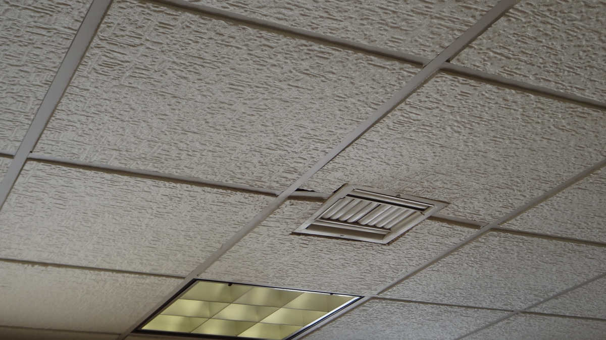
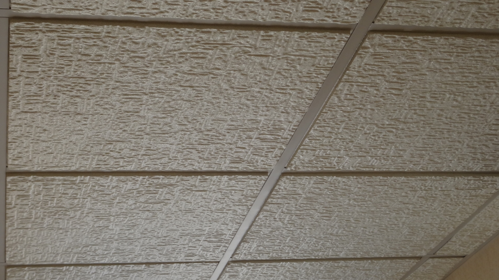

Descripción del Producto
Seguridad
Al estar constituidos de poliestireno tienen la propiedad de ser autoextinguibles al entrar en contacto con el fuego.
Nula absorción al agua
La gran capacidad de las piezas DECORAK® para resistir la humedad evita que los plafones se deformen o manchen al entrar en contacto con el agua.
Fácil manejo y rapidez de instalación
Su gran resistencia y ligereza les permite ser instalados con facilidad logrando un mínimo desperdicio de piezas a diferencia de otros plafones. Además de proporcionar belleza, los plafones ofrecen aislamiento acústico y gran reflectividad de la luz en interiores.
Aplicaciones del Producto


Ficha Tecnica
Descripción.